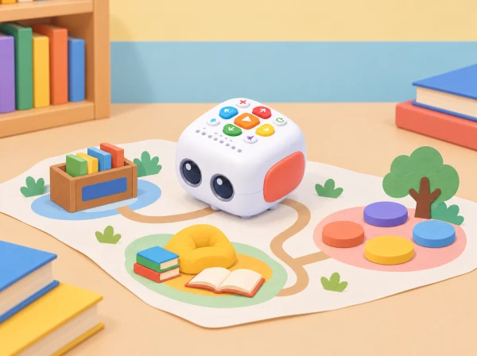

Una ruta de contes per la biblioteca
🏷️ Convivència i ciutadania
🌱 Situació, repte i intenció
la història és una obra pròpia que podem explicar amb paraules, imatges o gestos.
🎯 Aprenentatges i vocabulari
orientar-se en una graella, construir una seqüència amb més d’una destinació, anticipar posicions, detectar i corregir una ordre, crear una narració amb inici, canvi i final, escoltar i negociar decisions compartides.
🧰 Materials i preparació
Per a equips de tres o quatre, prepareu Tale-Bot carregat i comprovat, una graella gran de paper o tela, targetes de fletxes, tres espais de lectura dibuixats, obstacles opcionals i figures o pictogrames per a personatges. Dissenyeu un mapa original i de poques caselles; no cal reproduir les targetes del fabricant. Deixeu un corredor lliure perquè el robot puga girar i avançar sense caure de la taula.
Comproveu amb antelació com s’introdueixen, s’executen i s’esborren ordres en el model disponible. La proposta pressuposa únicament els botons de programació bàsica de Tale-Bot; si la unitat concreta incorpora àudio o gravació, aquestes funcions són opcionals i no es necessiten per completar-la. No graveu veus infantils ni associeu personatges a infants reals. El docent pot ser escriba de les idees o oferir pictogrames quan la producció oral o escrita no siga accessible.
📅 Seqüència didàctica
Creem la biblioteca i els personatges (40 min)
Fase 1 · Activem i prediem
Comenceu amb la pregunta: quin lloc de lectura ens agradaria trobar al barri? Recolliu idees sense valorar-les per realistes o fantàstiques. Predigueu quins espais podrien ajudar a contar un viatge i quina informació ha de descobrir el personatge.
Fase 2 · Explorem i construïm
En assemblea, seleccioneu tres espais diferents i representeu-los amb dibuixos o pictogrames: per exemple, una prestatgeria de llibres d’animals, un racó de lectura tranquil i una plaça de narració. Parleu de com es comparteix un espai: deixar passar, cuidar els materials i respectar qui vol escoltar en silenci.
Fase 3 · Expliquem i registrem
Cada equip tria un personatge fictici —una llavor que busca un conte, un núvol viatger o una tortuga bibliotecària— i decideix què necessita o vol descobrir. Ordeneu tres targetes: inici, canvi durant el viatge i final o descobriment. Encara no programeu: cada parada ha de tindre una raó dins de la història.
Fase 4 · Apliquem i millorem
Comproveu que el personatge té un motiu per visitar cada espai. Si dues parades conten el mateix, canvieu-ne una o reviseu l’ordre. Una altra parella pot llegir les targetes i dir què espera que passe.
Fase 5 · Comprovem i reflexionem
Planifiquem i provem la ruta (40 min)
Fase 1 · Activem i prediem
Col·loqueu la graella al terra o en una taula accessible. Situeu Tale-Bot a l’inici i els tres espais en destinacions separades. Predigueu en quina casella acabarà després de les primeres ordres i marqueu l’orientació inicial.
Fase 2 · Explorem i construïm
Afegiu, si cal, un únic obstacle que obligue a triar camí. Cada equip mou primer una fitxa de paper casella a casella i representa les instruccions amb fletxes. Un moviment equival a passar a la casella adjacent; els girs depenen de l’orientació del robot.
Fase 3 · Expliquem i registrem
Ordeneu les targetes de fletxes i assenyaleu les tres parades. Anoteu la seqüència i la predicció de casella final. Comproveu el pla amb una altra parella abans de transferir-lo al robot.
Fase 4 · Apliquem i millorem
Una persona introdueix la seqüència a Tale-Bot, una altra comprova la posició i una tercera compara el resultat amb el mapa. Feu un trajecte curt fins a la primera destinació i continueu després cap a les altres. Si el robot no arriba on s’esperava, reconstruïu les ordres i canvieu-ne només una cada vegada. Compareu dues rutes: quina és més curta, quina evita l’obstacle i quina és més fàcil de comprovar?
Fase 5 · Comprovem i reflexionem
Narrem les parades i compartim (40 min)
Fase 1 · Activem i prediem
Recupereu l’esquema de la primera sessió i assigneu una part de la història a cada espai. Predigueu què entendrà el públic només observant les parades i les targetes.
Fase 2 · Explorem i construïm
Abans de moure el robot, acordeu una frase breu, un gest o una imatge per a cada parada. Prepareu una targeta d’escena que indique què hi descobreix el personatge. Manteniu la història fictícia; ningú no ha de relatar experiències personals ni actuar en públic si no vol.
Fase 3 · Expliquem i registrem
Reviseu l’ordre de les escenes amb el mapa i anoteu quina parada correspon a cada moment. Si useu una funció de so del model disponible, demaneu permís i empreu només contingut creat pel grup; també podeu narrar en directe o mostrar pictogrames.
Fase 4 · Apliquem i millorem
Feu una passada completa de la ruta mentre una persona narra i una altra verifica les destinacions. Un altre equip reconstrueix l’ordre de les escenes observant les targetes. Si algun moment no s’entén, canvieu una targeta, una frase o l’ordre d’una parada i repetiu la comprovació.
Fase 5 · Comprovem i reflexionem
🧪 Evidències i avaluació
Observeu el raonament i la col·laboració durant les proves. Registreu si l’equip:
- situa inici i destinacions en la graella i descriu una posició relativa;
- representa una ruta amb ordres en l’ordre d’execució i prediu almenys una arribada;
- compara el trajecte real amb el previst i localitza una ordre que cal revisar;
- connecta les parades amb moments diferents d’un relat comprensible;
- escolta una proposta del grup i explica una decisió compartida.
Guardeu el mapa inicial, la ruta corregida i les targetes de les tres escenes. Una seqüència dictada, assenyalada o construïda amb fletxes demostra el mateix aprenentatge que una explicació oral completa. No puntueu la velocitat ni la longitud del relat.
♿ Participació, accessibilitat i seguretat
Augmenteu la mida de les caselles i el contrast, simplifiqueu el mapa a una destinació cada vegada o afegiu relleu tàctil. Repartiu rols rotatius —narrador/a, planificador/a, programador/a i verificador/a—, amb dret a observar o canviar de rol. Oferiu pictogrames, frases iniciadores («El personatge arriba perquè…»), narració compartida i temps d’espera. El robot pot ser conduït per una persona seguint les indicacions de qui planifica; cap infant necessita parlar, llegir, escriure o manipular el dispositiu per participar en el repte.
🔗 Referents i adaptació
La idea de donar un motiu narratiu a cada destinació s’inspira en l’activitat oficial Deliver Animals i en el marc de les Activity Cards de Tale-Bot. Ací canviem el context, els personatges, el mapa i el guió.